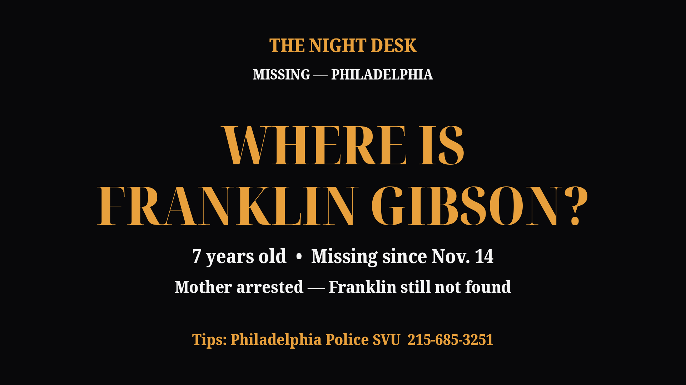

November 21, 2026 · 2 min read
Missing Philadelphia 7-year-old Franklin Gibson located, mother facing charges

Headline card by The Night Desk
Missing Philadelphia 7-year-old Franklin Gibson located, mother facing charges
Update — Monday, Nov. 23 (afternoon)
Philadelphia police reported Monday that Franklin Gibson, 7, and another juvenile have been located, FOX 29 reports. Details about the children's conditions have not been reported, and it is not yet known where police found them.
At the District Attorney's Monday morning press conference announcing charges against Franklin's mother, Lynn Chamberlain, DA Larry Krasner had said Franklin's location had yet to be confirmed and the case was still being treated as a missing persons case. The located report came after that press conference.
Philadelphia police had been asking for the public's help finding Franklin Gibson, 7, who had been missing since Nov. 14 — even after investigators arrested his mother.
Who to look for
- Franklin Gibson, 7
- About 4 feet tall, about 65 pounds
- Black hair, brown eyes
- Last seen Saturday, Nov. 14, at about 9:58 p.m. in the 7200 block of Limekiln Pike in Philadelphia's West Oak Lane neighborhood
What police say happened
Investigators determined Franklin had been taken by his mother, Lynn Chamberlain, who was the last person seen with him. Chamberlain was arrested on Friday, Nov. 20, but Franklin has still not been found.
According to court documents reported by NBC10 Philadelphia, Chamberlain was charged with concealment of the whereabouts of a child, kidnapping for ransom, interference with custody of a child, and endangering the welfare of a child, on $25,000 bail. WPVI (6abc) reports she posted bail on Saturday.
Update — Monday, Nov. 23
As of Monday morning, Franklin still has not been located, FOX 29 reports. The Philadelphia District Attorney's Office was set to announce charges against Chamberlain, including kidnapping, at an 11:30 a.m. Monday press conference.
WPVI reports Franklin was in the custody of the city's Department of Human Services after Chamberlain lost parental rights, and that he went missing on Nov. 14 during a dispute when DHS responded to pick him up from his great-grandmother's home and Chamberlain arrived. His great-grandmother told WPVI she believes Franklin is safe.
This is not the first time Philadelphia police have searched for Franklin. FOX 29 reports he was also reported missing in September and October of this year — the September report was with his brother — and he was quickly located both times.
If you know where Franklin is
Police say they are concerned for Franklin's wellbeing. Anyone with information on his whereabouts is urged to call the Philadelphia Police Department's Special Victims Unit at 215-685-3251 or 215-685-3252, or call 911.
Do not rely on a social media comment to reach investigators — call directly.
Sources: FOX 29 Philadelphia and NBC10 Philadelphia, reporting Nov. 21, 2026, citing Philadelphia police and court documents; FOX 29 and WPVI (6abc) updates, Nov. 23, 2026, including FOX 29's Nov. 23 report that Franklin Gibson and another juvenile have been located.
Source: FOX 29 Philadelphia — read the original report
← Back to latest stories